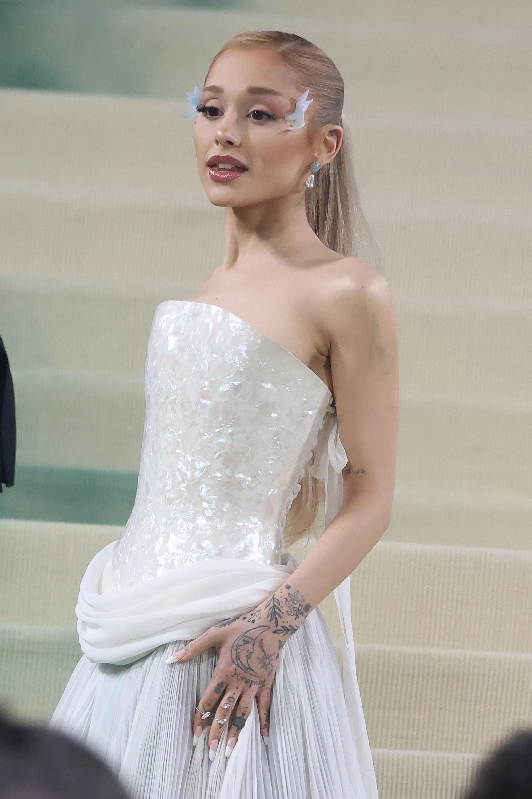
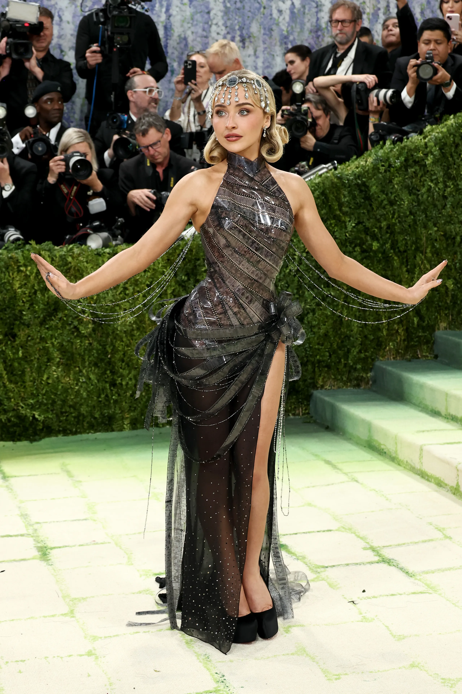
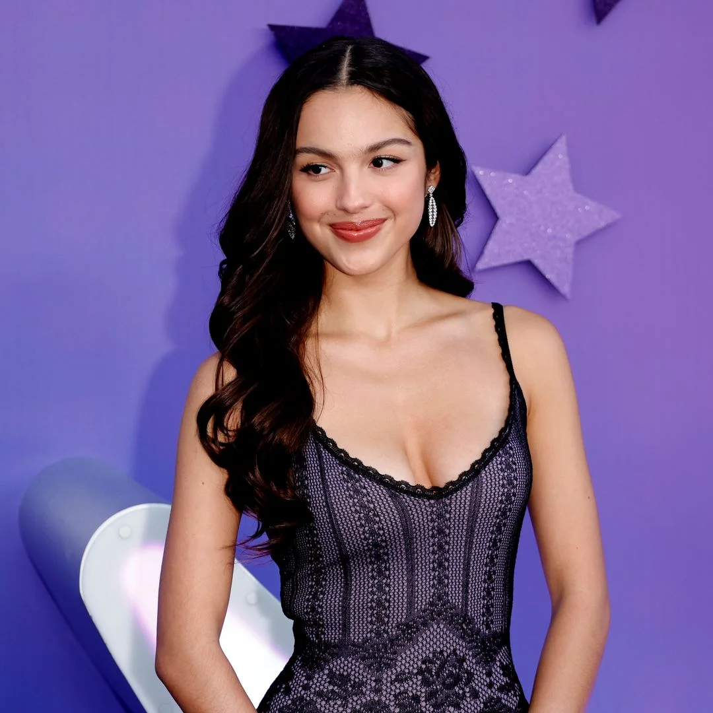
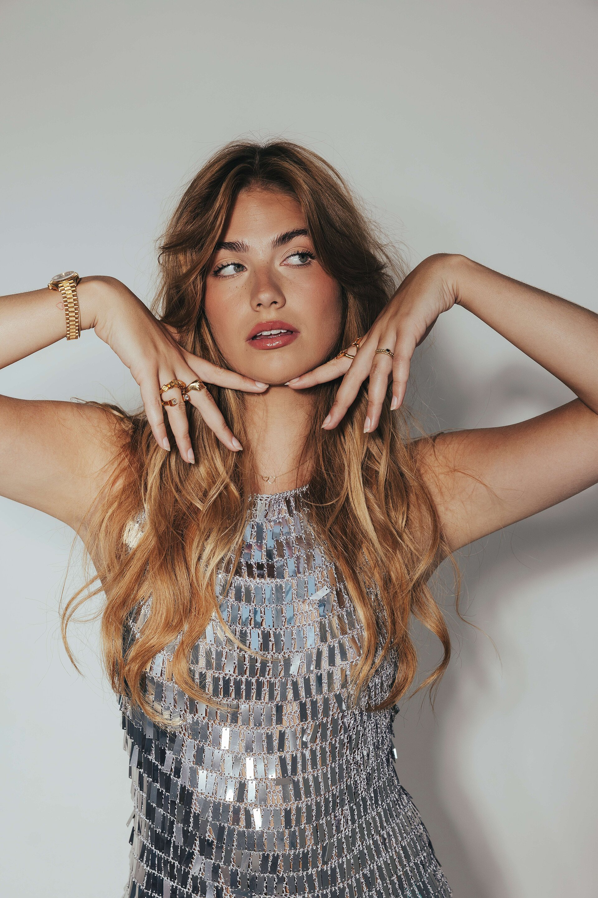

class: center, middle <!-- In deze textarea kan je in Markdown de slides aanpassen, zie https://github.com/gnab/remark/wiki voor alle mogelijkheden! --> # ⭐️Inspiratie voor de digital garden<br>van Esmée Gravemaker⭐️ Vrouwlijke Popartiesten --- <h1>Agenda</h1> <p class="agenda-regel"><strong>01</strong> Mijn onderwerp</p> <p class="agenda-regel"><strong>02</strong> 10 links</p> <p class="agenda-regel"><strong>03</strong> 50 afbeeldingen</p> <p class="agenda-regel"><strong>04</strong> Introtekst</p> --- # Onderwerp Ik heb gekozen voor vrouwelijke popartiesten, omdat ik zelf veel naar hun muziek luister. Mijn favoriete artiesten zijn Ariana Grande, Sabrina Carpenter, Olivia Rodrigo, Roxy Dekker en Tate McRae. Ik vind het interessant om te onderzoeken wat deze artiesten zo populair maakt en wat ze met elkaar gemeen hebben. Ze maken allemaal popmuziek, maar hebben ook allemaal hun eigen stijl, uiterlijk, muziek en manier van optreden. Tijdens mijn onderzoek wil ik kijken naar hun muziek, concerten, kleding, social media, fans en hun ontwikkeling als artiest. <div class="artiesten"> <p></p> <p></p> <p></p> <p></p> <img src="afbeeldingen/tate.jpg"> </div> --- # 10 links 1. https://www.theguardian.com/music/2026/aug/16/ariana-grande-eternal-sunshine-tour-review-o2-london 2. https://www.nrc.nl/nieuws/2026/09/08/door-ariana-grande-een-eetstoornis-toe-te-dichten-misken-je-de-ernst-van-het-echte-probleem-a4935810 3. https://fhm.nl/entertainment/zo-groeide-roxy-dekker-uit-tot-de-grootste-popsensatie-van-nederland 4. https://variety.com/gallery/celebrity-pics-red-carpet-photos-august-2026/ 5. https://nl.wikipedia.org/wiki/Olivia_Rodrigo 6. https://nos.nl/artikel/2608096-joost-klein-trapt-wereldtournee-af-zijn-verhaal-gaat-dwars-door-de-taalbarriere-heen?utm_source=chatgpt.com 7. https://nos.nl/artikel/2545070-justin-timberlake-olivia-rodrigo-en-muse-headliners-op-pinkpop?utm_source=chatgpt.com 8. https://www.harpersbazaar.com/celebrity/latest/a71169166/sabrina-carpenter-red-carpet-photos-met-gala-2026/ 9. https://nos.nl/video/2629702-roxy-dekker-naar-de-arena-ben-net-22-als-ik-daar-sta-echt-ziek 10.https://oor.nl/news/olivia-rodrigo-brengt-nieuwe-single-the-cure-uit/ --- # 50 afbeeldingen <div class="foto-collage"> <!-- Ariana Grande - 10 foto's --> <div class="artiest-vak ariana-vak"> <h2>Ariana Grande</h2> <div class="foto-grid"> <img src="afbeeldingen/ariana1.jpg"> <img src="afbeeldingen/ariana2.jpg"> <img src="afbeeldingen/ariana3.jpg"> <img src="afbeeldingen/ariana4.jpg"> <img src="afbeeldingen/ariana5.jpg"> <img src="afbeeldingen/ariana6.jpg"> </div> </div> <!-- Sabrina Carpenter - 10 foto's --> <div class="artiest-vak sabrina-vak"> <h2>Sabrina Carpenter</h2> <div class="foto-grid"> <img src="afbeeldingen/sabrina1.jpg"> <img src="afbeeldingen/sabrina2.jpg"> </div> </div> <!-- Olivia Rodrigo - 10 foto's --> <div class="artiest-vak olivia-vak"> <h2>Olivia Rodrigo</h2> <div class="foto-grid"> <img src="afbeeldingen/olivia1.jpg"> <img src="afbeeldingen/olivia2.jpg"> <img src="afbeeldingen/olivia3.jpg"> <img src="afbeeldingen/olivia4.jpg"> </div> </div> <!-- Roxy Dekker - 10 foto's --> <div class="artiest-vak roxy-vak"> <h2>Roxy Dekker</h2> <div class="foto-grid"> <img src="afbeeldingen/roxy1.jpg"> <img src="afbeeldingen/roxy2.jpg"> <img src="afbeeldingen/roxy3.jpg"> <img src="afbeeldingen/roxy4.jpg"> <img src="afbeeldingen/roxy5.jpg"> <img src="afbeeldingen/roxy6.jpg"> </div> </div> <!-- Tate McRae - 10 foto's --> <div class="artiest-vak tate-vak"> <h2>Tate McRae</h2> <div class="foto-grid"> <img src="afbeeldingen/tate1.jpg"> <img src="afbeeldingen/tate2.jpg"> <img src="afbeeldingen/tate3.jpg"> <img src="afbeeldingen/tate4.jpg"> <img src="afbeeldingen/tate5.jpg"> </div> </div> </div> ``` --- # Introtekst <h2>Wat wil ik vertellen?</h2> <p> Ik wil vertellen wie bekende popartiesten zijn, wat ze hebben bereikt en waarom hun muziek populair is. </p> <h2>Hoe vertel ik dit?</h2> <p> Ik vertel zelf kort over de artiesten en hun muziek. <br>Met afbeeldingen laat ik de artiesten zien. Via links kan de bezoeker extra informatie en muziek bekijken. </p> <h2>Mijn Garden</h2> <p> In deze Garden ontdek je bekende popartiesten, hun muziek en hun carrière. <br>Met foto's, informatie en handige links leer je meer over hun succes. </p> <!-- Laat onderstaande staan anders breekt je presentatie -->